Step Three
a not-so-secret plan for saving the world

Years ago,
I lost my temper while arguing with my brother and said,
"Jeff, I could teach you everything I know
and you'd still be an idiot."
Please keep that in mind as you listen to what follows...

This Isn't The Talk I Planned To Give
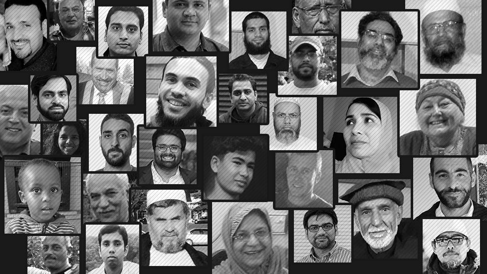
March 15, 2019
This Isn't The Talk I Planned To Give
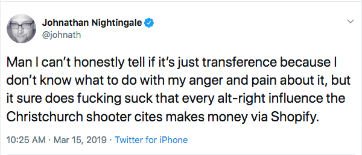
How Was He Radicalized?
I wish someone would teach scientists…
1998: …how to program
2011: …how to teach
2019: …how to fix what's broken
"We teach foundational coding and data science skills to researchers worldwide."

Growth
| Year | Workshops | Learners |
|---|---|---|
| 2012 | 38 | 1378 |
| 2013 | 93 | 3212 |
| 2014 | 139 | 4742 |
| 2015 | 274 | 7755 |
| 2016 | 345 | 7133 |
| 2017 | 338 | 7248 |
| 2018 | 466 | 8612 |
And 2000 certified instructors
Along the Way
 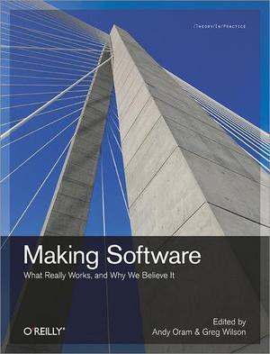
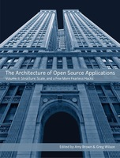
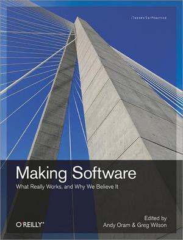
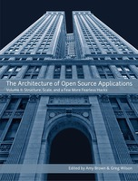
But none of these had the same kind of impact
Meeting My Jargon Quota
I teach end-user programmers
Who outnumber professionals 4 to 1
I teach free-range learners
- Who are also the majority
I use active teaching in a hybrid setting
Live coding, pre-emptive formative assessment, …
Video conferencing in the classroom
I Don't Do A Lot Of Research, But…
Denny, Becker, Craig, Wilson, & Banaszkiewicz: "Research This! Questions that Computing Educators Most Want Computing Education Researchers to Answer", ICER'19.
Have people propose questions they want computing education researchers to answer.
Have a larger pool of people rank those questions.
No question places in the top 10 for both researchers and non-researchers.
Lesson #1
Those who radiate are not representative
Lesson #2
The future (of teaching) is already here…
 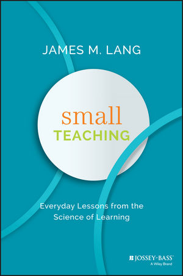
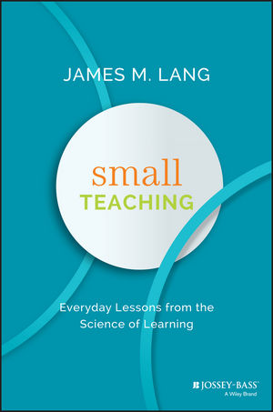

…it's just not evenly distributed
Lesson #3
We know enough
 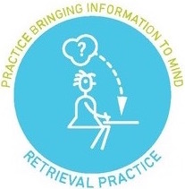
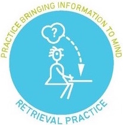


 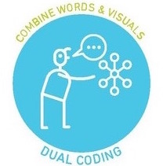
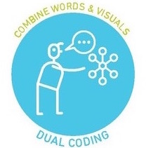
Unlikely there's an unknown 2X improvement
Focus now should be on adoption, not discovery
Lesson #4
Academia does not value good teaching
How many permanent lecturers
have ever been chairs of departments
at major universities?
How many researchers
have ever been denied tenure
because of poor teaching?
Lesson #4
Academia does not value good teaching
And even if it did

Lesson #5
Most people would rather fail than change

(including scientists)
Lesson #6
But some will give you a day
|
|

Lesson #7
It takes a commons
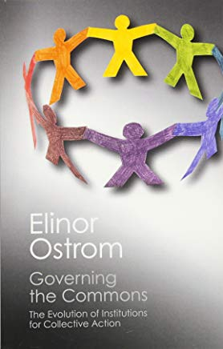 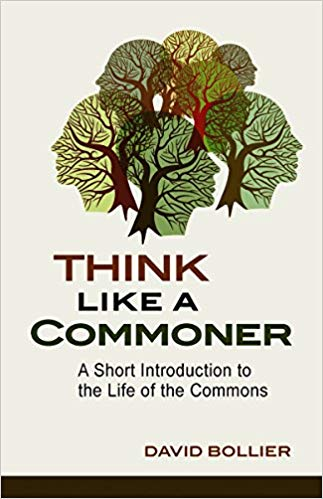
Lesson #7
It takes a commons
Something managed jointly by a community according to rules they themselves have evolved and adopted.

Innovation happens in the margins
Lesson #8
Institutions only change in three ways
People see the light
People feel the fire
Your vote counts
1. People See the Light
"Of course they'll listen—we're right."
Sow today, reap tomorrow
It's hard to tell "In the long run"
from "I don't want to make a fuss."
2. People Feel the Fire
"Or else!"
(Very) slow progress on reproducible research
Even less on adoption of better teaching methods
Because we are counting on the powerful to see the light
2. People Feel the Fire

I no longer believe my generation will fix this
3. Your Vote Counts
"If you don't have a vote, you're not negotiating:
you're begging."
"We don't need allies in government:
we need to be in government."
"Comrades! We must seize the means of promotion!"
Lesson #9
We are not the first to try to change the world


Lesson #9
We are not the first to try to change the world
| 1928: | Supreme Court decides that my grandmother isn't a person |
| 1942: | My mother's Nisei friends are interned |
| 1963: | My favorite pianist is denied service at restaurants in Toronto |
| 1981: | Police raid bath houses in Toronto |
A Modest Proposal
Learning is our thing
So let's learn how to do this
A Modest Proposal
Six half-day workshops over three days
| Strategies for institutional change | Rising |
| Grassroots community organization | Brown |
| Marketing and communication | Kuchner |
| Leadership and management | Nightingale |
| Allyship | Aurora |
| Personal digital security | Okuda |
https://tinyurl.com/6-part-workshop
We can train 60 people for less than $70,000
Why It Will Work
It already has
Fosters alliances with like-minded communities
Helps participants meet their immediate goals
Why It Has To

Heather Heyer
May 29, 1985 – August 12, 2017


Mike Caulfield: Choral Explanations
David Wylie: The Reusability Paradox
How many of your colleagues have ever run for their local school board?